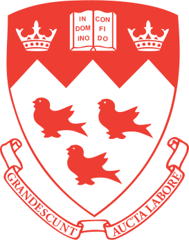
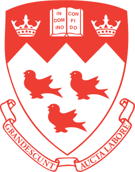

Academic history
I completed a BSc in pure mathematics and computer science at The University of Western Australia. My honours supervisor was Cheryl Praeger. I completed a PhD in the School of Computer Science and Software Engineering at Monash University, under the supervision of Graham Farr. My thesis is entitled Three-Dimensional Orthogonal Graph Drawing. Graham's supervisor at Oxford University was Dominic Welsh, and Dominic's supervisor was John Hammersley. I maintain the academic family tree of John Hammersley and the academic family tree of Dominic Welsh.
I then completed several research fellowships: in the Algorthmic Applications Group at The University of Sydney; in the Algorithms Graphs and Geometry Lab at Carleton University; in the Department of Applied Mathematics at Charles University in Prague; in CARP at McGill University; in the Combinatorial Geometry Group at Universitat Politècnica de Catalunya in Barcelona; and in the Discrete Structures and Algorithms group at The University of Melbourne. I moved to Monash in 2012.